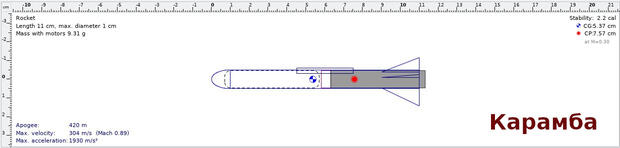
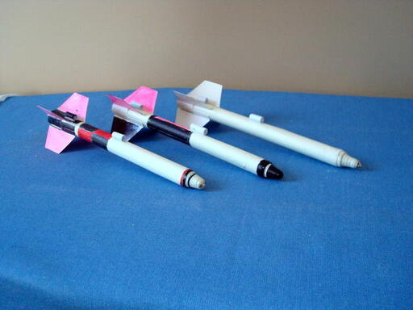

Изготовление ракет малой дальности
Сразу хочу предупредить. Если вы никогда не делали летающие модели ракет,
то лучше сперва почитать другие источники и изучить "азы". В интернете
теперь много сайтов, книг, документации. Данная страничка адресована людям с
некоторым опытом, поэтому тонкостей технологии изготовления не будет. Не
расскажу я, как склеивать корпус, как готовить смесь, как произвести
пуск и прочее. Считается, что вы это уже знаете. А если не знаете, то вот хороший
сайт, наверное самый лучший в Рунете. И новичок и эксперт найдет там много
полезного. А главное все растолковано до предела.
Ракетная страничка Игоря Козлова.
* * *
Баллистическая ракета "Минарет"
Кликайте на картинку, чтобы увеличить.
Конструкция очень стандартная, ничего нового там нет. Но
она рассчитана на компе для достижения максимальной дальности полета.
Поэтому ракета - одноразовая. Она всегда улетает из поля зрения.
Рассчетная высота - почти 500 метров. Я думаю, где-то так оно и есть,
хотя проверить трудно. Говорю же, улетает и растворяется в небе.
Ну, о конструкции. Я живу в дюймовой системе мер, поэтому некоторые
размеры - странные.
Двигатель B11 по стандартной классификации делается на круглой палочке
3/8 дюйма. Это где-то 9.5 мм. В длину он 55 мм. Для изготовления я беру плотную
бумагу размером 55х200. Сопло - деревянное, длиной 10 мм с дыркой 7/64 дюйма,
то есть 2.8 мм. Набиваю порошковой смесью следующего состава-
калиевая селитра, сахар, сера в соотношении 39,21,3. Длина заряда 35мм.
Канал того же диаметра, что и сопло. Длина - 33мм. Потом делается
передняя заглушка - бумажный пыж, потом еще один пыж с клеем ПВА. Да,
везде использую клей ПВА. Этот двигатель используется и в других
конструкциях. См. ниже.
Сама ракета. Корпус из трубки длиной 160 мм. Сворачиваю из листа бумаги
160х100, по диаметру двигателя. Обтекатель - скрутка из бумажной ленты,
покрытая клеем. Внуть корпуса вклеевается бумажное кольцо - упор для
двигателя. На глубину 50 мм. Таким образом "зад" двигателя торчит на 5
мм наружу. Стабилизаторы - три штуки из "визиточного" кртона.
Треугольные. Длина - 30 мм. Ширина 15 мм. В основании каждого крыла
делается небольшой разрез, и получаются два как бы лепестки, которые
нужно загнуть в разные стороны. Это для приклеивания.
И последнее, что очень важно. Вся ракета заполняется сухим песком. Песок
нужно засыпать сзади до самого упорного кольца и забить туда бумажный
пыж, чтобы не высыпался.
Сбоку приклеивается стартовая трубка длиной 50 мм. Ну и диаметр в
зависимости от стартового прутка. У меня - 3 мм. Вот и все собственно.
Как уже было сказано, ракета "баллистическая". Практически весь полет
проходит по инерции, после кратковременного разгона. Взлет проходит
медленно и "тяжело", поэтому стартовый пруток нужно взять не меньше метра
длиной.
По результатам испытаний, "Минарет" показал себя нестабильной
конструкцией. Она очень зависит от качества изготовления двигателя.
Поэтому реальная дальность полета сильно меняется от случая к случаю.
Эта конструкция больше не выпускается и за запускается.
Недостатки устранены в модели "Комарилла". См. ниже.
Ракета "Летучая мышка"
Конструктивно незначительно отличается от "Минарета". В сущности, отличий
только два. Песком ее наполнять не нужно. Она легкая. И стабилизаторы
делаются по чертежу, любезно украденному мной с сайта, что я показывал в
начале. Их тоже три.
Ракета летит весь путь вверх с работающим двигателем, и сразу теряет
скорость после его отключения. Из за легкости взлет стремительный. Возможно
- сверхзвуковой. Поэтому наблюдать за полетом лучше издалека. Эту ракету можно
сопровождать взглядом по дымному следу. И летит она примерно вдвое ниже, чем
предыдущая конструкция. Таким образом, есть некоторая вероятность, что вы
найдете ракету после падения. Упав на мягкую землю или в траву, она почти не
повреждается. Можно запускать снова.
Баллистическая ракета "Комарилла"
Кликайте на картинку, чтобы увеличить.
В сущности, это модификация схемы "Минарет". Здесь сильно уменьшено
сопротивление воздуха за счет уменьшения площади поверхности ракеты.
Корпус выполняется из трубки длиной 8 см. Заполняется песком. Стабилизаторы -
прямоугольные треугольники с катетами 10 и 20 мм. Выполняются из двух
слоев картона, как на чертеже. Склейте их вместе, но не промазывайте
клеем область левее пунктирной линии. Потом разведите эти участки в
разные стороны, чтобы приклеить к корпусу.
Расчетная высота полета - 405 метров. Удалось измерить фактическую высоту,
это стало большой удачей. Как и ожидалось, она около 400.
Баллистическая ракета "Карамба"

Кликайте на картинку, чтобы увеличить.
Здесь мы сделали ракету, примерно с теми же характеристиками, что
и у "Комариллы", однако она потребляет вдвое меньше топлива.
Толщиною она как карандаш, а длиною в полтора раза длиннее. Нам потребуется
другой двигатель.
Двигатель B9 по стандартной классификации делается на круглой палочке
5/16 дюйма. Это где-то 7.9 мм. В длину он 50 мм. Для изготовления я беру плотную
бумагу размером 50х150. Сопло - деревянное, длиной 8 мм с дыркой 7/64 дюйма,
то есть 2.8 мм. Набиваю порошковой смесью следующего состава-
калиевая селитра, сахар, сера в соотношении 39,21,3. Длина заряда 35мм.
Канал того же диаметра, что и сопло. Длина - 33мм. Потом делается
передняя заглушка - бумажный пыж, потом еще один пыж с клеем ПВА. Да,
везде использую клей ПВА. Этот двигатель используется и в других
конструкциях. См. ниже.
Сама ракета. Корпус из трубки длиной 100 мм. Сворачиваю из листа бумаги
100x70 по диаметру двигателя. Обтекатель - скрутка из бумажной ленты,
покрытая клеем. Внуть корпуса вклеевается бумажное кольцо - упор для
двигателя. На глубину 47 мм. Таким образом "зад" двигателя торчит на 3
мм наружу. Стабилизаторы - три штуки из "визиточного" кртона -
прямоугольные треугольники с катетами 10 и 20 мм. Выполняются из двух
слоев картона, как на чертеже. Склейте их вместе, но не промазывайте
клеем область левее пунктирной линии. Потом разведите эти участки в
разные стороны, чтобы приклеить к корпусу.
И последнее, что очень важно. Вся ракета заполняется сухим песком. Песок
нужно засыпать сзади до самого упорного кольца и забить туда бумажный
пыж, чтобы не высыпался.
Сбоку приклеивается стартовая трубка длиной 30 мм. Ну и диаметр в
зависимости от стартового прутка. У меня - 3 мм. Вот и все собственно.
Как уже было сказано, ракета "баллистическая". Практически весь полет
проходит по инерции, после кратковременного разгона.
По сравнению с предыдущими моделями "Карамба" имеет маленький диаметр,
что сильно снижает лобовое сопротивление. В результате расчетная высота
полета получилась чуть больше, чем у предыдущей конструкции - 420 метров.
А затраты энергии сильно меньше.
Еще одно улучшение, которое подойдет для всех конструкций. Весь корпус
рекеты нужно покрыть слоем клея ПВА. После высыхания образуется
пластиковое покрытие, добавляющее прочности и уменьшающее трение о воздух.
Испытания показывают, что Карамба в полете не держит направление
и обычно летит "винтом". Требуется подумать о причинах. Слишком маленькие
размеры не позволяют точно установить стабилизатор. А скорость при старте
очень приличная из за того, что двигатель мощный для такой
малютки. Ракету закручивает сразу же после старта и потом разогнаться
она уже не может. Продолжаем работать над устранением. Видимо песок
следует заменить чем-то более тяжелым.
"Чарли"
Винтажная конструкция "Чарли". За всю историю моего ракетостроения, c 1977
года, я смастерил ее бессчетное количество раз. Однако, в докомпьютерную
эру все параметры подбиралсь на шару, без понимания. Да и литературы никакой
не было. Конструкция далека от совершенства. Будет тут для истории. В последний раз
летала в 2011 году. Вот тут можно почитать историко-ностальгический обзор этой модели.
В сущности она всегда была главным смыслом моего околоракетного технического
творчества.

С некоторых пор стал вкладывать в каждую ракету маленькую визитку с
анонимным почтовым адресом. Размер 40x8 мм. Немало моих ракет раскидано по
труднодоступным местам Миссури и Южной Каролины. Пускай отныне несут обратный
адрес производителя. Для того чтобы добраться до визитки потребуется найти
ракету и поинтересоваться, что у нее внутри. Для облегчения процесса ввел
более яркую раскраску. Это три "Карамбы".
Приложения:
1. Расчет двигателя
2. Программа расчета конструкции и траектории. Симулятор.
3. Сборник литературы по ракетному строительству.
Книги, журналы, за 50 лет на разных языках. всего 144 мб.
Ну, в заключение остается добавить следующее. Не забывайте, что даже очень
маленькая ракетка, летящая со скоростью 200 м/c столь же опасна как и пуля.
Желаю крепкого здоровья и долгих лет жизни!
 (C) *** JES 2012 *** Юрий Шимановский
http://shymanovsky.mooo.com
(C) *** JES 2012 *** Юрий Шимановский
http://shymanovsky.mooo.com
Назад|На главную